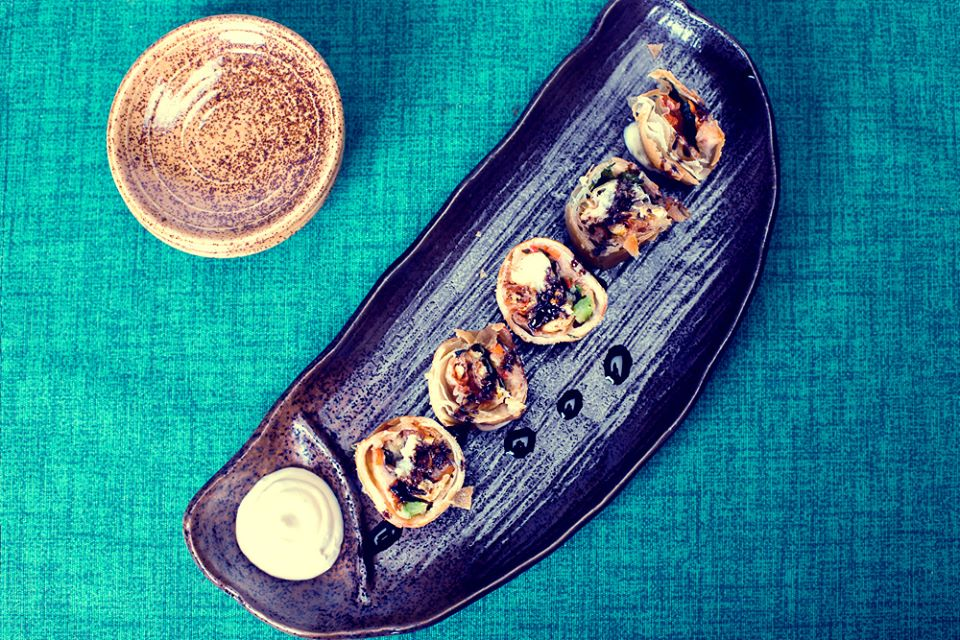
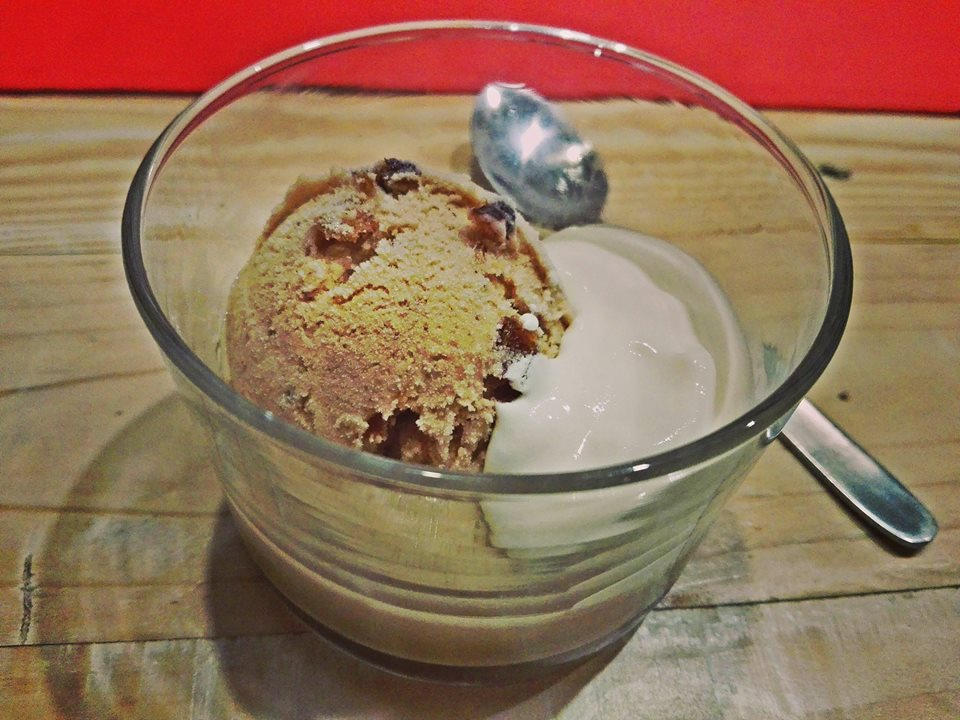
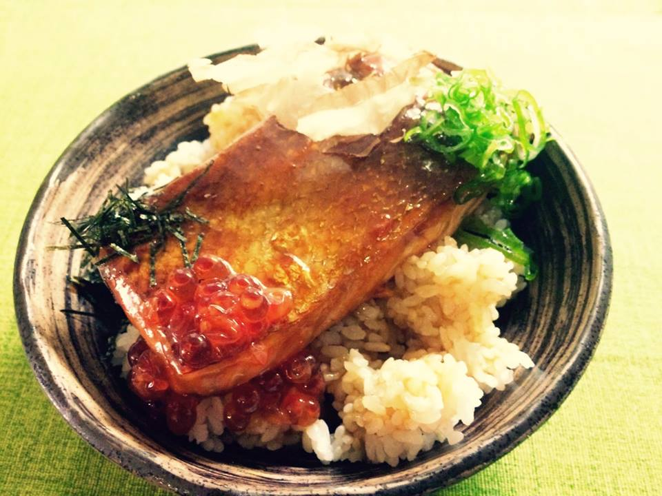
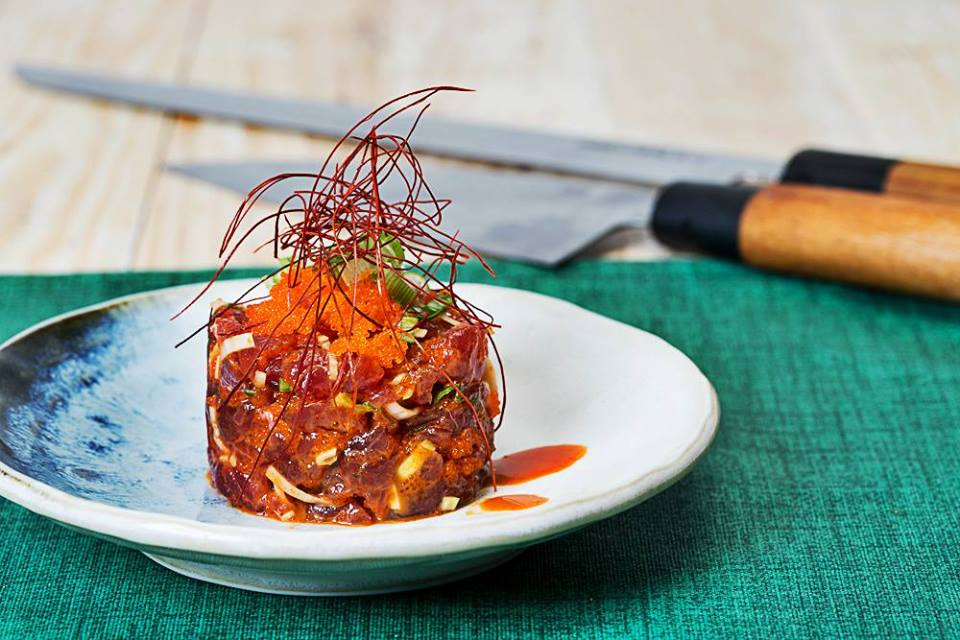

De la mano de nuestro chef Massamune os traemos la Comida más tradicional japonesa a Catarroja |
|  |
Tras años trabajando en el Izakaya familiar Massamune Quiere ofrecernos la experiencia de comer los ingredientes más frescos y de la mejor calidad. Para ello ha contado con el |
 |
| mejor equipo posible, grande productos de nuestra tierra y magníficos trabajadores . Nuestra carta cuenta siempre con productos de temporada Y pescado fresco del día, el cual es mimado y cocinado con amor Para así sacarle el mejor sabor |
|  |
SI, como nuestro chef sientes pasión por la gastronomía japonesa o meramente deseas descubrirla de verdad, este es tu lugar. Este es tu restaurante, FoodyFood. |
|  |